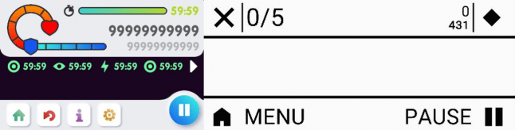
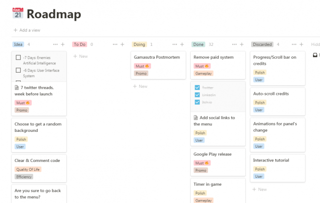
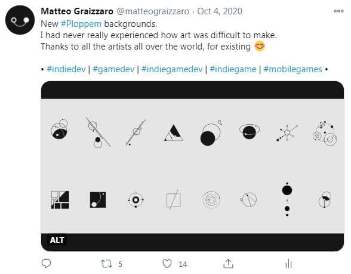

Ploppem Postmortem: My unknown game
In this postmortem, I'll discuss the game project that I realized for my portfolio in the past months. It is called Ploppem and I developed it for the mobile market, it is currently free to play on both Google Play and Itch.
What went right
A solid core
Even if, at first, I have considered the idea of exploding colored spheres too simple for a game, over time I realized that I was wrong. Whenever I tried to increase the depth of the game mechanics, I found myself returning to the starting point, to the core. It took me months to realize this, but, after that, it was easier to develop systems that didn't ruin the game loop and instead increased the fun.
I have started by replacing the gray background with geometric drawings that changed randomly with each match and then adding the ability to select your favorite. Following the same principle, I have allowed the player to customize the appearance of the enemies to a certain extent. These and other's additions were originally designed around the idea to add a 'Pay to unlock' system, which in theory would have created a small income from the game, but, ultimately, I have decided to remove these limitations.
I have improved enemy spawning and tested the game multiple times, aiming to find a balance between fun and difficulty while trying to protect the core of the game.
Fast prototyping
During the months of development, I have modified the game numerous times; doing so, I had to learn to prototype quickly, in order to find out, in the shortest possible time, if the modifications were valid.


Choosing the right engine
Ploppem was not my first game, before starting it I had already completed several personal projects with Unity, so the decision to continue using the engine was a natural one, which helped me avoid some big mistakes.
Sooner or later I will start learning another software, like Unreal, but for the moment I think I will try to improve what I already know.
Time management
The beginning was littered with errors and delays, but once I was able to define what I could and should do, I started planning the work every day, and, even if it didn't always go well, it still helped me enormously to complete the project.


What went wrong
Bad planning
When I've started developing the game, my only goal was to make something polished enough to add to my portfolio. I had an old prototype ready and I decided to improve it, I thought it would take a month or so: it took me almost five.
In the last couple of months this has changed slightly, but I still suffered a lot from the loss of time caused by the lack of organization, which could have been spent better.
Lack of skill
I still have a lot to learn, and, as I developed Ploppem, I realized this over and over again. At first I thought that I would be able to make a good game using only free assets, but, as they were not enough, I thought about supplying them with the paid ones. In the end, I realized that the best thing was to make everything myself. Unfortunately, I'm not a good artist and it took me some time to learn the basics and do the necessary.
Online exposition
My most famous tweet about Ploppem got 14 likes, and it was about new game backgrounds, the release one got 4, one of the many signs that something went wrong during my marketing.
Well before Ploppem I had started using Twitter to interact with other developers and connect with players; I have tried my best to keep the same habit, but it didn't work very well. I have never been able to capture enough attention and therefore feedback, probably because I didn't put enough care into it.


I have understood that if you really want to use online platforms to advertise, you need to take them seriously and give them a great amount of time.
Conclusion
Releasing Ploppem has made me very happy and also free to move on, but if I will embark on another journey, I will first make sure I'm ready for it.
These are a few things I wll try to keep in mind:
- A plan is mandatory if you want to succeed, it doesn't have to be too detailed, but, before you start developing a game, its core must already be established.
- No matter how, to increase efficiency you need to organize your days and define milestones.
- Do not overestimate your resources, whethever they are: time, monetary or skills.
- Keeping a detailed diary of what you do helps to stay organized, and will be very helpful in creating the postmortem.
- Never take social media lightly, time and effort are needed to use them effectively.
I hope this article will help you avoid my mistakes,
Bye.